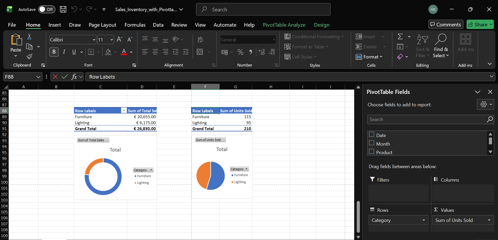

Bestandsanalyse – Verkaufs- & Lagerdaten-Dashboard (In Arbeit)

In diesem Projekt habe ich einen selbst erstellten Verkaufs- und Lagerdatensatz analysiert, um Trends in der Produktperformance und im Lagerbestand zu erkennen. Mit Excel wurden die Daten bereinigt, Kennzahlen wie Gesamtumsatz und Lagerumschlag berechnet sowie PivotTables und Diagramme zur Visualisierung der Ergebnisse erstellt. Anschließend habe ich ein übersichtliches Dashboard zusammengestellt, das Top-Seller, Umsatzverteilung nach Kategorien und Lagerbestände zeigt und die schnelle Identifikation von Artikeln mit niedrigem Bestand ermöglicht. Das Projekt zeigt praktische Fähigkeiten in Datenbereinigung, Analyse, Visualisierung und Dokumentation über GitHub.
Technologien: Excel, PivotTables, Datenanalyse